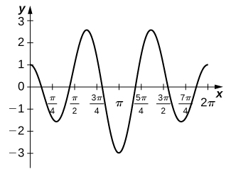

The Fundamental Theorem of Calculus gave us a method to evaluate integrals without using Riemann sums. The drawback of this method, though, is that we must be able to find an antiderivative, and this is not always easy. In this section we examine a technique, called integration by substitution, to help us find antiderivatives. Specifically, this method helps us find antiderivatives when the integrand is the result of a chain-rule derivative.
At first, the approach to the substitution procedure may not appear very obvious. However, it is primarily a visual task—that is, the integrand shows you what to do; it is a matter of recognizing the form of the function. So, what are we supposed to see? We are looking for an integrand of the form For example, in the integral we have and Then,
and we see that our integrand is in the correct form.
The method is called substitution because we substitute part of the integrand with the variable u and part of the integrand with du. It is also referred to as change of variables because we are changing variables to obtain an expression that is easier to work with for applying the integration rules.
Substitution with Indefinite Integrals
Let where is continuous over an interval, let be continuous over the corresponding range of g, and let be an antiderivative of Then,
Proof
Let f, g, u, and F be as specified in the theorem. Then
Integrating both sides with respect to x, we see that
If we now substitute and we get
□
Returning to the problem we looked at originally, we let and then Rewrite the integral in terms of u:
Using the power rule for integrals, we have
Substitute the original expression for x back into the solution:
We can generalize the procedure in the following Problem-Solving Strategy.
Integration by Substitution
Look carefully at the integrand and select an expression within the integrand to set equal to u. Let’s select such that is also part of the integrand.
Substitute and into the integral.
We should now be able to evaluate the integral with respect to u. If the integral can’t be evaluated we need to go back and select a different expression to use as u.
Evaluate the integral in terms of u.
Write the result in terms of x and the expression
Using Substitution to Find an Antiderivative
Use substitution to find the antiderivative
The first step is to choose an expression for u. We choose because then and we already have du in the integrand. Write the integral in terms of u:
Remember that du is the derivative of the expression chosen for u, regardless of what is inside the integrand. Now we can evaluate the integral with respect to u:
Analysis
We can check our answer by taking the derivative of the result of integration. We should obtain the integrand. Picking a value for C of 1, we let We have
so
This is exactly the expression we started with inside the integrand.
Use substitution to find the antiderivative
Hint
Let
Sometimes we need to adjust the constants in our integral if they don’t match up exactly with the expressions we are substituting.
Using Substitution with Alteration
Use substitution to find
Rewrite the integral as Let and Now we have a problem because and the original expression has only We have to alter our expression for du or the integral in u will be twice as large as it should be. If we multiply both sides of the du equation by we can solve this problem. Thus,
Write the integral in terms of u, but pull the outside the integration symbol:
Integrate the expression in u:
Use substitution to find
Hint
Multiply the du equation by
Using Substitution with Integrals of Trigonometric Functions
Use substitution to evaluate the integral
We know the derivative of is so we set Then Substituting into the integral, we have
Evaluating the integral, we get
Putting the answer back in terms of t, we get
Use substitution to evaluate the integral
Hint
Use the process from to solve the problem.
Sometimes we need to manipulate an integral in ways that are more complicated than just multiplying or dividing by a constant. We need to eliminate all the expressions within the integrand that are in terms of the original variable. When we are done, u should be the only variable in the integrand. In some cases, this means solving for the original variable in terms of u. This technique should become clear in the next example.
Finding an Antiderivative Using u-Substitution
Use substitution to find the antiderivative
If we let then But this does not account for the x in the numerator of the integrand. We need to express x in terms of u. If then Now we can rewrite the integral in terms of u:
Then we integrate in the usual way, replace u with the original expression, and factor and simplify the result. Thus,
Use substitution to evaluate the indefinite integral
Hint
Use the process from to solve the problem.
Substitution for Definite Integrals
Substitution can be used with definite integrals, too. However, using substitution to evaluate a definite integral requires a change to the limits of integration. If we change variables in the integrand, the limits of integration change as well.
Substitution with Definite Integrals
Let and let be continuous over an interval and let f be continuous over the range of Then,
Although we will not formally prove this theorem, we justify it with some calculations here. From the substitution rule for indefinite integrals, if is an antiderivative of we have
Then
and we have the desired result.
Using Substitution to Evaluate a Definite Integral
Use substitution to evaluate
Let so Since the original function includes one factor of x2 and multiply both sides of the du equation by Then,
To adjust the limits of integration, note that when and when Then
Evaluating this expression, we get
Use substitution to evaluate the definite integral
Hint
Use the steps from to solve the problem.
Using Substitution with an Exponential Function
Use substitution to evaluate
Let Then, To adjust the limits of integration, we note that when and when So our substitution gives
Use substitution to evaluate
Hint
Use the process from to solve the problem.
Substitution may be only one of the techniques needed to evaluate a definite integral. All of the properties and rules of integration apply independently, and trigonometric functions may need to be rewritten using a trigonometric identity before we can apply substitution. Also, we have the option of replacing the original expression for u after we find the antiderivative, which means that we do not have to change the limits of integration. These two approaches are shown in .
Using Substitution to Evaluate a Trigonometric Integral
Use substitution to evaluate
Let us first use a trigonometric identity to rewrite the integral. The trig identity allows us to rewrite the integral as
Then,
We can evaluate the first integral as it is, but we need to make a substitution to evaluate the second integral. Let Then, or Also, when and when Expressing the second integral in terms of u, we have
Key Concepts
Substitution is a technique that simplifies the integration of functions that are the result of a chain-rule derivative. The term ‘substitution’ refers to changing variables or substituting the variable u and du for appropriate expressions in the integrand.
When using substitution for a definite integral, we also have to change the limits of integration.
Key Equations
Substitution with Indefinite Integrals
Substitution with Definite Integrals
Why is u-substitution referred to as change of variable?
2. If when reversing the chain rule, should you take or
In the following exercises, verify each identity using differentiation. Then, using the indicated u-substitution, identify f such that the integral takes the form
For
In the following exercises, find the antiderivative using the indicated substitution.
In the following exercises, use a suitable change of variables to determine the indefinite integral.
In the following exercises, use a calculator to estimate the area under the curve using left Riemann sums with 50 terms, then use substitution to solve for the exact answer.
[T] over
[T] over
The exact area is
[T] over
[T] over
… The exact area is 0.
In the following exercises, use a change of variables to evaluate the definite integral.
In the following exercises, evaluate the indefinite integral with constant using u-substitution. Then, graph the function and the antiderivative over the indicated interval. If possible, estimate a value of C that would need to be added to the antiderivative to make it equal to the definite integral with a the left endpoint of the given interval.
[T] over
[T] on
The antiderivative is Since the antiderivative is not continuous at one cannot find a value of C that would make work as a definite integral.
[T] over
[T] over
The antiderivative is You should take so that
[T] over
[T] over
The antiderivative is One should take
If in what can you say about the value of the integral?
Is the substitution in the definite integral okay? If not, why not?
No, because the integrand is discontinuous at
In the following exercises, use a change of variables to show that each definite integral is equal to zero.
the integral becomes
the integral becomes
the integral becomes
since the integrand is odd.
Show that the average value of over an interval is the same as the average value of over the interval for
Setting and gets you
Find the area under the graph of between and where and is fixed, and evaluate the limit as
Find the area under the graph of between and where and is fixed. Evaluate the limit as
As the limit is if and the limit diverges to +∞ if
The area of a semicircle of radius 1 can be expressed as Use the substitution to express the area of a semicircle as the integral of a trigonometric function. You do not need to compute the integral.
The area of the top half of an ellipse with a major axis that is the x-axis from to and with a minor axis that is the y-axis from to can be written as Use the substitution to express this area in terms of an integral of a trigonometric function. You do not need to compute the integral.
[T] The following graph is of a function of the form Estimate the coefficients a and b, and the frequency parameters n and m. Use these estimates to approximate
[T] The following graph is of a function of the form Estimate the coefficients a and b and the frequency parameters n and m. Use these estimates to approximate

Key terms
change of variables the substitution of a variable, such as u, for an expression in the integrand
integration by substitution a technique for integration that allows integration of functions that are the result of a chain-rule derivative

![Two graphs. The first is the function f(x) = sin(x) / cos(x)^3 over [-5pi/16, 5pi/16]. It is an increasing concave down function for values less than zero and an increasing concave up function for values greater than zero. The second is the fuction f(x) = ½ sec(x)^2 over the same interval. It is a wide, concave up curve which decreases for values less than zero and increases for values greater than zero.](https://raw.githubusercontent.com/openstax/osbooks-calculus-bundle/main/media/CNX_Calc_Figure_05_05_206.jpg)

![A graph of a function of the given form over [0, 2pi], which has six turning points. They are located at just before pi/4, just after pi/2, between 3pi/4 and pi, between pi and 5pi/4, just before 3pi/2, and just after 7pi/4 at about 3, -2, 1, -1, 2, and -3. It begins at the origin and ends at (2pi, 0). It crosses the x axis between pi/4 and pi/2, just before 3pi/4, pi, just after 5pi/4, and between 3pi/2 and 4pi/4.](https://raw.githubusercontent.com/openstax/osbooks-calculus-bundle/main/media/CNX_Calc_Figure_05_05_201.jpg)